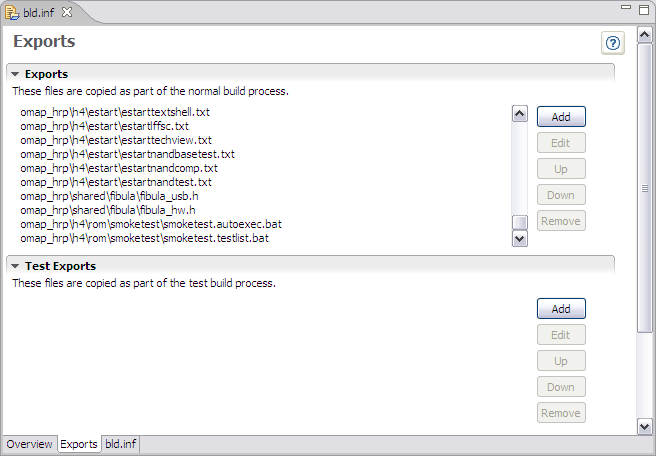
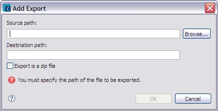
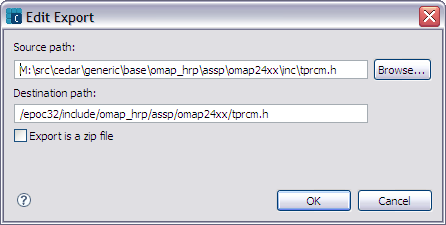

The INF Editor Exports pane lists files to be copied to the indicated destination path that are part of the normal build process. You can add files, edit paths, move files up or down in the list, or remove files from the list.

Figure 1 - INF Editor - Exports Pane
| Name | Function |
|---|---|
Exports |
Add, edit, arrange order, or remove files that will be part of the build process.
|
Test Exports |
Add, edit paths, arrange order, or remove files that will be part of the test build process. |
Click the Add control to open the Add Export dialog (figure 2) to add a file to be exported to the destination path when the project is built.

Figure 2 - Add Export dialog
| Name | Function |
|---|---|
Source path |
Path and name of file to be exported. |
Destination path |
Path location where file is to be exported. |
| Export is a zip file | Check this option if the export is a zip file and you want to extract it on the destination path. |
Click the Edit control to open the Edit Export dialog (figure 3) to edit the source and destination path of the selected file.

Figure 3 - Edit Export dialog
| Name | Function |
|---|---|
Source path |
Path and name of file to be exported. |
Destination path |
Path location where file is to be exported. |
| Export is a zip file | Check this option if the export is a zip file and you want to extract it on the destination path. |